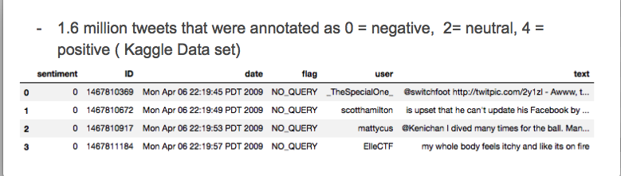

User can input seatch term for tweets they want to retrieve.
Used a set of 1.6 million tweets from Kaggle as training data for our model. Tweets were categorrized as positive, neutral or negative.

There was little documentation on how the tweets were categorrized. Performed a Vader analysis to see if there was any correlation. Later on decided to use the values derived from Vader Analysis to build feauture.
**VADER (Valence Aware Dictionary and sEntiment Reasoner) is a lexicon and rule-based sentiment analysis tool that is specifically attuned to sentiments expressed in social media.
Cleaned up tweets to tokenize them, remove stop words and ran hashing term frequency
Created feature using IDF token, length and results from Vader Analysis.
Split data into testing and training data to test accuracy of our model. Was able to achieve a accuracy of 0.66631.
Used Twitter API to get most recent tweets of the search term that the user input and Google Map API to convert location to Lat/Lng
Vizulaized the tweets using Geomapping.